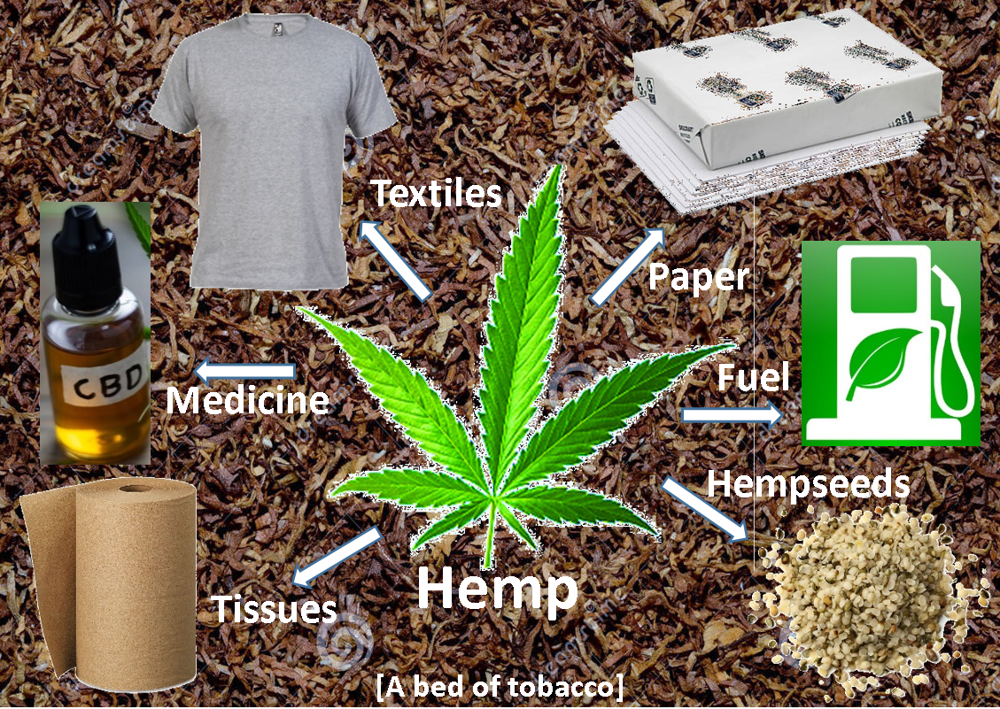

Hemp Is the 21st Century Tobacco
This is a thorough review of Hemp (Cannabis Sativa) in the context of contemporary American society, politics, and economy.
A concise version of this review was published by the ACS Journal of Agricultural Science and Technology.
Abstract
Hemp is becoming a cornerstone crop in many regions of the U.S.A. The burgeoning hemp economy presents a timely opportunity for agriculturalists and researchers in the Tobacco country of the American Southeast to replace tobacco, which has withered in the past few decades, with hemp as the cash crop for the 21st century. This review details Cannabis biochemistry and the processing technologies that yield final hemp products within the context of global and American markets. The analytical discussion is further contextualized with recent fervor for Cannabis products that has ignited Cannabis decriminalization throughout the country, after a century of sociopolitical stigmas and prohibition. This review provides a unique perspective of the blossoming hemp economy while seeking to urge and inspire agriculturalists and researchers of the American Southeast to seize the opportunity of replacing tobacco with hemp as the 21st century cash crop.
Graphical Abstract
Introduction
Cannabis sativa
Cannabis is recapturing its popular fixation as a wonder crop. The natively Eurasian genus 1,2 has provided societies with fiber, food, and medicine since at least 2700 B.C.E. 3 and possibly since before 8000 B.C.E 4. This versatile crop consists of distinct species in Figure 15 whose qualities have different applications. Cannabis sativa L. is "hemp" that is used for food, fiber, and medicine. Cannabis indica is "marijuana" that is used for medicine, recreation, and ceremony 6. These two distinct species, however, are often mistaken for each other, which has been detrimental to hemp agriculture over the past century.
The tarnishing of Cannabis and Hemp began with the Reefer Madness campaign of 1936. The campaign unfortunately vilified all Cannabis products including hemp as being hallucinogenic agents that inspire violent crime. The Marijuana Tax Act of 1937 quickly followed popular dismay from the Reef Madness campaign, where all Cannabis operations, including innocuous hemp farms, were rendered financially impractical and thus cultivation gradually subsided 7. The financial constraints were lifted only once during World War II 8,9 when the American military became in desperate need of hemp fibers after the Japanese military seized friendly hemp farms in the Pacific 10. The Controlled Substances Act (CSA) of 1970 initiated the infamous war on drugs which made the mere use or possession of any Cannabis varieties, including non-psychedelic hemp11, a high felony, and which has exacerbated social tensions in the US justice system 12. The CSA defines Cannabis in the highest classification as a Schedule 1 substance, yet, perplexingly, Schedule 1 substances must by definition lack medicinal value and Cannabis possesses numerous medical uses like medical marijuana and in prescription drugs (more in section Female Flower) 13. These legal policies, nevertheless, have maligned attitudes of Cannabis both domestically and internationally; for example, the Italian hemp cultivation plummeted from 135,000 hectares to 150 hectares during the 20th century 14.

Figure 1: The gross botanical form and leaf features of the two prominent Cannabis species.
Legislation
Hemp is now crucially being differentiated from marijuana and thus liberated from limitations 15. Varying degrees of Cannabis declassification have occurred in all but 6 American states 16, in spite of the federal Schedule 1 classification 17, and federal law now recognizes hemp as distinct from marijuana after the US Agricultural Act of 2014 and in the Agricultural Improvement Act of 2018 18:
The term "hemp" means the plant Cannabis sativa L. and any part of that plant, including the seeds thereof and all derivatives, extracts, cannabinoids, isomers, acids, salts, and salts of isomers, whether growing or not, with a delta-9 tetrahydrocannabinol [THC] concentration of not more than 0.3 percent on a dry weight basis.
This momentum and growing awareness of hemp is even inspiring federal proposals to protect the Cannabis domestic economy through the SAFE act 19 and the CLAIM act 20, and to declassify all Cannabis products through the MORE act 21. Recreational declassification and Cannabis reform may be especially eminent with the recent Democratic sweep of the Legislative and Executive federal branches in the 2020 election, and with growing bipartisan support of Cannabis 22. We believe that this pivotal embrace for hemp and Cannabis products, in tandem with expanding consumer demand 23 and a domestic aptitude for cash crops in the following discourse, will fuel the American hemp renaissance of the 21st century.
Tobacco Country
Hemp may be an agent of economic repair to the American Tobacco country. The tobacco country of the American Southeast, which includes Kentucky, Virginia, Tennessee, and especially North Carolina 24, enriched with the tobacco industry: e.g. Duke University and Duke energy in North Carolina were funded by James Buchanan Duke 25 who industrialized the cigarette rolling machine 26. These states have unfortunately also decayed with the American tobacco industry, where 20th century medical research 27-30 fueled the indictment of tobacco companies 31 and marred domestic tobacco consumerism 32,33. Recent international growth in tobacco consumption is moreover sheltered from domestic tobacco industry by international tariffs 34, which compounds the economic hardship. The North Carolinian tobacco workforce has, for example, decreased by 56% between 1992-2012 35 and the quantity of North Carolinian tobacco farms plummeted by 95% between 1954-2012 36. The regional consequence is that skilled farmers, industrial infrastructure, and knowledgeable business people are idle without a profitable cash crop.
Progressive tobacco farmers have transitioned to cultivating hemp. These successful transitions from tobacco to hemp are documented in Kentucky 37,38 and Tennessee 39,40, and are inspiring agriculturalists across former Tobacco country to explore hemp as an emerging cash crop. Kentucky was once the epicenter of American hemp during the turn of the 20th century, and, although these hemp genetics have disappeared 10,41 except for remnants in the wild 42,43, robust hemp genetics for the American Southeast can be recreated through cloning and genetic engineering technologies that are available to growers today. The agronomic benefits of growing hemp are also pronounced 44-48, which provides an additional utility to new hemp growers as a valuable rotation crop as well as a cash crop.
State legislatures are anticipating and supporting the agricultural transition. The North Carolina legislature recently established a commission to investigate whether a portion of the estimated $5 billion of domestic hemp revenue by 2027 49 can be claimed by the North Carolinian state economy 50. The Virginian legislature has recently decriminalized Cannabis and will legalize recreational marijuana 51, which will invite the Cannabis industry to establish in Virginia and will challenge the rest of Tobacco country to follow their lead. These recent actions establish favorable precedence for hemp in Tobacco country that may continue to reverberate through the region and predictably inspire resident agriculturalists to join the movement by replacing tobacco with hemp. The American Southeast appears to be recognizing the redeeming potential of hemp for the region's agricultural sector that is in dire need of a cash crop.
The Hemp Economy
This review, in addition to sociopolitical events, will survey the science and economy of hemp. The scope complements reviews by Amaducci et al.52 and Small et al.53 by emphasizing hemp products and economic prospects, and by geographically contextualizing the discussion within the American Southeast. Hemp products are generally sex-dependent, where males produce seeds and fine fibers while females produce flower buds and coarse fibers54, and thus the following sections briefly articulate each product category 55,56. We believe that the collective value of these products justify the pivotal role of hemp as an agricultural cash crop in the 21st century.
Female Flower
The female hemp flower bud is a biochemical cornucopia. The flower bud is the source of naturopathic hemp and CBD oils, and of Cannabis smoking products. The chemical proportions of the flower bud oil are influenced by the extraction method 57,58, although, the flower oil extracts invariably contain medicinal chemicals like sterols, fragrant terpenes 59,60, cannabinoids, and cannflavins 61. This diverse assemblage of chemicals 58 in hemp flower oils is renowned for exerting an "entourage effect" 62-64, where the medicinal effects of the complete hemp extract 65 are greater than the isolated effects of each contributing chemical; nevertheless, each chemical of the extracted entourage has distinct medicinal value. The sterol β-sitosterol, for example, can remedy prostate enlargement and can be chemopreventive66. The most prevalent terpenes in Cannabis are limonene that is common in citrus fruits and mycrene that is common in thyme and hops, which are depicted in Figure 2. Limonene is chemoprotective and chemotherapeutic67,68, and dissolves gallstones in vivo 69. Myrcene, by contrast, is hepatoprotective 70, prevents genetic damage 71, and attenuates osteoarthritis 72. Cannabinoids are the quintessential medicinal extract from Cannabis 73-75, which constitute a diverse set of > 60 cannabinoids 60 in numerous chemical classes, which are sampled in Figure 3.
The effects of the cannabinoids primarily originate from the endocannabinoid system. The endocannabinoid system 76 is defined by the network of CB1 and CB2 receptors throughout the body, and particularly in the nervous system. The endocannabinoid system is involved in myriad physiological phenomena like dementia and Parkinson's Disease 77, and also like the fabled "runner's high" 78. The CBC cannabinoid class 79 from Figure 3 is anti-inflammatory 80,81 and selectively stimulates CB2 receptors 82. The psychedelic cannabinoid class THC from marijuana stimulates CB1 receptors in the nervous system 83, which ignites hunger and attenuates nausea. These physiological effects of THC cannabinoids are used medicinally in the drugs dronabinol, nabilone, and marinol 84-86. The economically emerging cannabinoid class CBD 87 from hemp stimulates both nervous CB1 receptors and bodily CB2 receptors 88, which simultaneously attenuates inflammation 89 and normalizes the nervous system. The latter attribute is used medicinally in the drug Epidiolex 90 to treat epilepsy.

Figure 3: Chemical structures of common terpenes in Cannabis: a) Myrcene and b) Limonene. Both chemicals are monoterpenes.

Figure 4: Chemical structures of cannabinoid classes: a) delta-9-tetrahydrocannabinoid (THC) class, b) cannabidiol (CBD) class, c)
cannabichromene (CBC) class, d) ubiquitous cannabinoid skeleton.
The reported conformers for each member of the THC, CBD, and CBC cannabinoid
classes are represented through the R-groups below each structural image.
Male Hempseeds
Hempseeds are a diverse hemp product. Hempseeds may be used as a hearty 21st century food, which are well aligned with progressive trends towards hypoallergenic 91,92 and plant-based proteins. The protein of hempseeds is both readily digestible93 and contains a complete amino acid profile 94, which are favorable attributes for healthful eating. The plant protein market was valued at $9.7 billion in 2020 and is estimated to reach $13.8 billion by 2026 95, which is fueled by the consumer migration toward vegetarianism and veganism 96 that already describe ~21% of the global population 97 . Hempseeds may further be a source of industrious oil. Hempseed oil is nutritionally unrivalled for possessing ~85-90% (w/w) omega-6 and omega-3 essential fatty acids in the optimum 3:1 ratio, while additionally containing the rare GLA and SDA fatty acids 94 that can alleviate eczema after dietary consumption 98. Hempseed oil also possesses nutraceutical chemicals 99, like polyphenols 100. Hempseed oil can moreover be used as an alternative resource for biodiesel 101 and oilseed biomass 102. Hempseeds are presently the most profitable of all hemp products 41
Fiber
Hemp is a more sustainable fiber source than trees or other fiber crops. Hemp requires 2-3 orders of magnitude less time to mature than trees and hemp possesses ~1/3 less lignin 103 than trees, which permit hemp fiber to be more efficiently processed in industry. Hemp fibers may furthermore be processed with the same industrial infrastructure as conventional wood sources 104, which facilitates drop-in substitutions of wood fibers with hemp fibers. Hemp in Table 1 is also more resource efficient than other fiber crops, and especially 1st generation biomass crops 105 that are critiqued for displacing food from hungry people 106. Hemp generally deters most pests 107 via inherent insecticidal properties 108 and thus hemp requires minimal applications of pesticides, whereas conventional textile fibers like cotton can require ~76 million pounds of pesticides annually 109. Hemp is evidently an efficient crop that may become a critical feedstock for the emerging bioeconomy 110,111, which will mitigate Anthropocene 112-116 and climate change 117-119 and the deleterious effects of these phenomena 120-126.
Hemp fibers are categorized into bast fibers and hurd fibers. Hemp bast fibers are exceptionally long and strong from an unusually high cellulosic content relative to hardwoods, softwoods, and other fiber crops 127-129. Hemp hurd fibers, by contrast, are of average quality, yet, they are notably hydrophilic. These fibers are contrasted in Figure 2 and Table 2. The different fiber qualities manifest in the distinct uses for each fiber, which are described in the following subsections.
Bast Fibers
Hemp bast fibers are the original hemp fiber resource and are extraordinarily industrious. The highly cellulosic fiber have produced a range of products between cordage9 and textiles49 since antiquity. Contemporary demand for hemp bast fiber is rekindling from the wave of awareness for sustainable resources like hemp 130. The influential American companies Patagonia 131 and Xero 132, for example, are blending hemp with their conventional materials in new sustainable product lines 133. These trend-setting movements may inspire an industry adoption of hemp fiber to meet the apprehended future textile demands.
Hemp bast fibers are the quintessential pulp and paper resource. The original paper millennia ago was created from hemp bast fibers134-136, and the long cellulosic fibers are still a favorable paper resource for being tear resistant and extraordinarily strong 127. The economic prowess of the modern pulp and paper industry 137 provides ample opportunity for hemp agriculturalists to acquire steady profit through hemp bast fibers. The global revenue of container cartoons alone, which is within the packaging materials sector of the pulp and paper industry 138, is $22 billion 139. The American graphic and writing papers sector of the pulp and paper industry is >$96 billion 140, and the global tissues sector 141 of the pulp and paper industry is >$70 billion 142 . These large and expanding pulp and paper sectors 143, when coupled with the industrial shift towards mitigating deforestation 144, converge on using hemp bast fibers as a resource that uniquely satisfies both the need for a cellulose fiber and the desire for a sustainable resource.
Table 1: Annual agronomic metrics for 1st generation biomass food crops (corn and soybeans), a fiber crop (hemp), and a woody crop (willow).
| Plant feedstock | Water requirements $\left(\frac{mm_{H_2O}}{year}\right)$ | Fertilizer requirements $\left(\frac{kg}{hectare*year}\right)$ | Dry crop yield $\left(\frac{kg}{hectare*year}\right)$ |
|---|---|---|---|
| Corn | 343 [7,9] - 880 [8] | 338 [2] | 2900 [7,1,3] - 11,800 [8] |
| Soybeans | 733 [9] | 59-321 [12] | 1720 [1] - 8500 [10] |
| Hemp | 45.4 [4,6,11,15] - 150 [5] | 8300 [6] - 14,400 [11] | |
| Shrub willow | 494 [14] - 3954 [13] | 100 [12] | 7700 [12] |
[1] The original source is inaccessible from China 145; [2]The total mass is constituted by nitrogen (162kg), phosphate (68kg), Potash (90kg), and Sulfer (18kg) 146; [3]The "56 lb per bushel" definition is assumed 147; [4]The fertilizer value represents the value for the maximum shive content 102; [5]Nitrogen was the most influential nutrient 148; [6] The tallest hemp plants were observed with 60 kg Nitrogen 149; [7]Citation150; [8] 440 for irrigated water requirements 151; [9]A weighted average of the irrigated and non-irrigated fields 105; [10]Nitrogen exclusively for non-nodulating isolines 152; [11]The yield is defined as biogas substrate 153; [12]Exclusively nitrogen fertilization, where the addition of potassium and phosphorous fertilizers were not associated with increased growth rates 154; [13]The seasonal EF in wetlands 155; [14] Sapflow was considered a proxy for transpiration 156; [15] Nitrogen was the most influential nutrient and thus it was only provided in the study157

Figure 4: Graphic contrast of the long bast fibers and the short hurd fibers from hemp.
Table 2: Contrasted properties of the bast and hurd hemp fibers.
| Hemp fiber type | Constitution of hemp stem (%) | Length (mm) | Cellulose (%) | Lignin (%) | Relative economic value |
|---|---|---|---|---|---|
| Bast | 35 [3] - 40 [1] | 20 [2] | 55-80.5 [1,2,3,5] | 4 [2,5] - 7 [3] | 10 [2] |
| Hurd | 60-65 | <2 [2] - 5 [4] | 33 [2,5] - 48 [3,4] | 21 [4,5] - 35 [2,14] | 1 [2] |
[1] 158; [2]External citations to undiscovered Kundu, 1942 and Bedetti and Ciarali, 1976 159; [3]Citation 160; [4]Citation 161; [5]Citation 104
Hurd Fibers
Hemp hurd fibers (shives) are affordable and hydrophilic. The hydrophilicity of hemp hurds is useful for absorptive materials 162 like animal bedding 137, cements 163,164, and tissue and towel paper products 165. The affordability of hemp hurds encourages their application as a 2nd generation alternative feedstock 166 in producing platform materials 103 and biofuels 167. The already large demand for biofuels 168 will increase as oil reserves dissipate in this century 169 and as governments incentivize 170 biofuels 171-173 toward achieving their low carbon emission goals 174. The affordable hemp hurd fibers can be applied in biocomposites materials 175-177 like hemp/polyester 178, hemp/polypropylene 179, and hemp/epoxy 180 blends. These blends are preferred over conventional plastics 181,182 for minimizing plastic pollution 184-187and for being more affordable and lighter without sacrificing strength 183. Hemp hurds may also be a more affordable alternative to hemp bast fibers 188 in creating nanocellulose fibrils 189,190, which offer unique material properties in bioactive and electrolytic applications 191 as two of many examples 192.
Hurd and Bast Fiber Separation
Hemp bast and hurd fibers can only be used after they are separated from each other. This separation process remains the greatest challenge of utilizing hemp fibers and is an active area of research. Retting is the centuries old method of liberating hurd and bast fibers 193,194 through decomposing the polymeric integument that binds the bast and hurd fibers together. Traditional retting exploits soil microbes 195 and morning dew 196 to cultivate biodegradation of the natural integument. Industrial retting controls the decomposition conditions 197 and adds complementary chemical additives 198-201 that can expedite the degradation 202,203 or can improve the sustainability of the process 204.
Decortication separates hemp fibers either after, or in lieu of, retting 205. Decortication mechanically separates the bast and the hurd fibers from hemp 206,207 via normal or pinning methods 208. The former method processes each hemp stalk in a single pass while the latter method repeatedly inserts and withdraws each hemp stalk from the decorticator as a means of straightening the fiber. Mechanical alternatives to decortication include hammer-milling 209 and ball-milling 210, which use hammers or metallic balls respectively to pulverize the integument of the hemp stalks and thereby liberate the two hemp fiber types from each other. Decortication protocols are being improved 211,212, which may gradually popularize the process as a means of preparing hemp fibers for textiles 213 and other fibrous applications.
Fiber Pulping
The separated fibers can be processed in pulp and paper industry through myriad means. The chemical and physical pulping methods for hemp are sampled in Table 3, although, physical and chemical treatments are often combined in practice for greater efficacy. The ubiquitous Kraft pulping process 214-216 is notably effective with hemp fibers 217,218, yet, the hydroxide concentration must be balanced to prevent the excessive hydroxide from deteriorating the fiber quality 179. Steam treatments 219,220 and combinations of steam with the Kraft process 221 are also efficacious.
A few green chemistry methods are also being explored in hemp fiber treatment. One method is autohydrolysis, where heated water depolymerizes polysaccharides like hemicellulose 222,223 and therefore primes the fiber for further biorefinery. Another method replaces caustic bleaching agents with mild carbonate solutions 224. These green chemistry methods are appealing for future research as both benign and sustainable means for accessing hemp fibers.
Table 3: Chemical and physical degradation methods for processing lignocellulosic hemp material.
| Hemp fiber type | Constitution of hemp stem (%) |
|---|---|
| Chemical treatment method | Physical treatment method |
| Gasification [225] | Ball-milling [226] |
| Aqueous solutions [227] | Irradiation [228] |
| Organic solvents [229,230] | Heat treatment under Nitrogen gas [231] |
| Alkaline solutions [217,232] | |
| Acidic solutions [233,234] | |
| Ionic liquids [235,236] | |
| Supercritical fluids (flax was examined) [237] |
Hemp country
The American Southeast is graced with hemp as a replacement cash crop for tobacco. The multitude of hemp products that span medicine, fiber, and food offer abundant economic opportunity for agricultural and industrial entrants to profit through the 21st century from the burgeoning hemp economy. These economic opportunities are furthermore experiencing political tailwinds, which may climax in this Democratic 2021-2023 congressional cycle with the legalization of recreational marijuana in the federal and state governments. The alignment of consumer fervor for sustainable and healthy products, the underutilized aptitude for cultivating cash crops in the American Southeast, and the political sentiments of this decade will billow the hemp industry through the foreseeable future into a noteworthy agricultural renaissance. The Tobacco country of the American Southeast may soon become known as Hemp country.
Acknowledgements:
The authors are beholden to Dr. Michael Harrington and GenoVerde Biosciences. Their support enabled the research and experiences that manifested in this paper. Larry and the associated farm workers with GenoVerde Biosciences deserve exceptional gratitude for teaching us, as lab scientists, the intimacies of hemp cultivation. The authors are thankful to Ann Blake of the Berkeley Center for Green Chemistry. She graced our research with intelligent discourse and new perspectives of the bioeconomy in North Carolina and beyond. The authors are finally indebted to Kristen Freiburger for her selfless support and suggestions.
Declaration of interests:
The authors have no competing financial or personal interests for the publication of the review herein. Neither party is politically active or legally tethered.
References
- Long, T., Wagner, M., Demske, D., Leipe, C. & Tarasov, P. E. Cannabis in Eurasia: origin of human use and Bronze Age trans-continental connections. Veg. Hist. Archaeobot. 26, 245-258 (2017).
- Li, H. L. The origin and use of cannabis in eastern asia linguistic-cultural implications. Econ. Bot. 28, 293-301 (1974).
- Garland, J. H. Hemp; A Minor American Fiber Crop. Econ. Geogr. 22, 126-132 (1946).
- Earleywine, M. Understanding Marijuana: A new look at the scientific evidence. (Oxford University Press, 2005).
- Anderson, L. C. Leaf variation among Cannabis species from a controlled garden. Bot. Museum Leafl. 28, 61-69 (1980).
- Benet, S. EARLY DIFFUSION AND FOLK USES OF HEMP. in Cannabis and Culture 39-49 (1975).
- Mikuriya, T. H. & Musto, D. F. Marijuana: medical papers. in The 1937 Marijuana Tax Act 419-440 (1972).
- USDA & Evans, R. Hemp For Victory. (1942).
- Ash, A. L. Hemp-production and utilization. Econ. Bot. 2, 158-169 (1948).
- Fine, D. Hemo Bound: Dispatches from the front lines of the next agricultural revolution. (Chelsea Green Publishing, 2014).
- Duppong, T. A. Industrial Hemp: How the Classification of Industrial Hemp as Marijuana under the Controlled Substances Act Has Caused the Dream of Growing Industrial Hemp in North Dakota to Go up in Smoke. N. D. Law Rev. 85, (2009).
- Alexander, M. The New Jim Crow: Mass Incarceration in the Age of Colorblindness. (The New Press, 2010).
- DEA. Controlled Substances Schedules. US Department of Justice https://www.deadiversion.usdoj.gov/schedules/ (2020).
- Amaducci, S. Hemp production in Italy. Journal of Industrial Hemp vol. 10 109-115 (2005).
- Angell, T. Congress votes to block feds from enforcing marijuana laws in legal states. Forbes (2019).
- Map of marijuana legality by state. DISA Global https://disa.com/map-of-marijuana-legality-by-state (2020).
- Williams, T. CBD is wildly popular. Disputes over its legality are a growing source of tension. The New York Times (2019).
- Congress, 115th. Agricultural Improvement Act of 2018. 115-334 (2018).
- Oleck, J. The SAFE Banking Act For Cannabis Will Be Great, This Security Expert Says, But One More Thing Is Needed. Forbes (2021).
- Stewart, I. The SAFE Banking and CLAIM Acts Will Transform the Cannabis Insurance Industry � Here�s What to Expect. Cannabis Business Executive (2021).
- S. 2227: MORE Act of 2019. Govtrack.us https://www.govtrack.us/congress/bills/116/s2227 (2019).
- Krane, K. The future of marijuana under Biden and a GOP senate. Forbes https://www.forbes.com/sites/kriskrane/2020/11/04/the-future-of-marijuana-under-biden-and-a-gop-senate/?sh=4d0e1c32168a (2020).
- USDA. Industrial hemp in the United States: Status and market potential. US Department of Agriculture (2000).
- McElwee, R. Bright Leaves. (2003).
- King, W. E. James Buchanan Duke (1856-1925). Duke University Libraries https://library.duke.edu/rubenstein/uarchives/history/articles/james-buchanan-duke (1997).
- Porter, P. G. Origins of the American Tobacco Company. 43, 59-76 (1969).
- RCP London. Smoking and Health. (Pitman Medical Publishing Co. LTD., 1962).
- Peto, R., Boreham, J., Lopez, A. D., Thun, M. & Heath, C. Mortality from tobacco in developed countries: indirect estimation from national vital statistics. Lancet 339, 1268-1278 (1992).
- Wilson, L. F. et al. How many cancer cases and deaths are potentially preventable? Estimates for Australia in 2013. Int. J. Cancer 142, 691-701 (2017).
- Samet, J. M. Tobacco smoking. The leading cause of preventable disease worldwide. Thorac. Surg. Clin. 23, 103-112 (2013).
- PBS. Inside the Tobacco Deal: Full chrronology. Public Broadcasting Service https://www.pbs.org/wgbh/pages/frontline/shows/settlement/timelines/fullindex.html (2014).
- US DHHS. The health consequences of smoking �� 50 years of progress. Medical Clinics of North America (2014) doi:10.1016/S0025-7125(16)30355-8.
- Lee, J. G. L., Goldstein, A. O., Klein, E. G., Ranney, L. M. & Carver, A. M. Assessment of college and university campus tobacco-free policies in North Carolina. J. Am. Coll. Heal. 60, 512-519 (2012).
- Murphy, B. & Eanes, Z. �It really hits North Carolina�: China goes after tobacco in latest tariff fight. The News and OBserver https://www.newsobserver.com/news/politics-government/politics-columns-blogs/under-the-dome/article207952919.html (2018).
- Tobacco: Charts. North Carolina in the Global Economy http://www.ncglobaleconomy.com/tobacco/charts.shtml#chart3c (2015).
- Capehart, T. Trends in U.S. Tobacco Farming. Electronic Outlook Report from the Economic Research Service (2004).
- HIA. No Title. Hemp Industries Association https://thehia.org/.
- Daniels, J. Mitch McConnell pushed for hemp legalization. Now Kentucky farmers are tripling down on the crop. CNBC https://www.cnbc.com/2019/03/28/kentucky-farmers-bet-on-hemp-as-new-cash-crop.html (2019).
- Cui, X. I. & Smith, S. A. 2019 Industrial Hemp extract (CBD) production Budget (1 Acre). Department of Agricultural and Resource Economics (2019).
- Wood, T. Tobacco out, hemp in for Tennessee farmers. AP News https://apnews.com/223930825831456aaf72430572194f2d (2019).
- Robbins, L. et al. Economic considerations for growing industrial hemp: implications for Kentucky�s farmers and agricultural economy department of agricultural economics. (2013).
- DEA. Domestic Cannabis eradication/suppression program. https://www.ncjrs.gov/pdffiles1/Digitization/152429NCJRS.pdf (1993).
- Sourcebook of criminal justice statistics online. https://www.albany.edu/sourcebook/pdf/t4382005.pdf (2005).
- Gu, S. Hints About Hemp: New crop for North Carolina small farmers.
- Fortenbery, T. R. Industrial hemp: opportunities and challenges for Washington. (2014).
- Linger, P., M�ssig, J., Fischer, H. & Kobert, J. Industrial hemp (Cannabis sativa L.) growing on heavy metal contaminated soil: Fibre quality and phytoremediation potential. Ind. Crop. Prod. An Int. J. 16, 33-42 (2002).
- Galic, M., Percin, A., Zgorelec, �. & Kisic, I. Evaluation of heavy metals accumulation potential of hemp (Cannabis sativa l.). J. Cent. Eur. Agric. 20, 700-711 (2019).
- Campbell, S., Paquin, D., Awaya, J. D. & Li, Q. X. Remediation of benzo[a]pyrene and chrysene-contaminated soil with industrial hemp (Cannabis sativa). Int. J. Phytoremediation 4, 157-168 (2002).
- GMR. Industrial hemp market size. https://www.grandviewresearch.com/industry-analysis/industrial-hemp-market (2020).
- Berger, P. E., Moore, T. & McCrory, P. House Bill 992. (General Assembly of North Carolina, 2016).
- MPP. HB 2312/SB 1406: Virginia cannabis regulation bill summary. https://www.mpp.org/states/virginia/hb-2312/sb-1406-virginia-cannabis-regulation-bill-summary/.
- Amaducci, S. et al. Key cultivation techniques for hemp in Europe and China. Ind. Crops Prod. 68, 2-16 (2015).
- Small, E. & Marcus, D. Hemp: a new crop with new uses for North America. in Trends in new crops and new uses (eds. Janick, J. & Whipkey, A.) (ASHS Press, 2002).
- B�sca, I. & Karus, M. The cultivation of hemp: botany, varieties, cultivation, and harvesting. (Hemptech, 1998).
- Kraenzel, D. G. et al. Industrial hemp as an alternative crop in North Dakota: A white paper study of the markets, profitability, processing, agronomoics and history. North Dakota State University 1-23 (1998).
- Limer, E. Back when we thought hemp would be a billion-dollar crop. Popular Mechanics (2018).
- Cappelletto, P. et al. Italy-grown hemp: Yield, composition and cannabinoid content. Ind. Crops Prod. 13, 101-113 (2001).
- Fiorini, D. et al. Valorizing industrial hemp (Cannabis sativa L.) by-products: Cannabidiol enrichment in the inflorescence essential oil optimizing sample pre-treatment prior to distillation. Ind. Crops Prod. 128, 581-589 (2019).
- Ross, S. A. & Elsohly, M. A. The volatile oil composition of fresh and air-dried buds of Cannabis sativa. Journal of Natural Products vol. 59 49-51 (1996).
- Brenneisen, R. Chemistry and Analysis of Phytocannabinoids and Other Cannabis Constituents. Marijuana and the Cannabinoids 17-49 (2007) doi:10.1007/978-1-59259-947-9_2.
- Barrett, M. L., Scutt, A. M. & Evans, F. J. Cannaflavin A and B, prenylated flavones from Cannabis sativa L. Experientia 42, 452-453 (1986).
- Russo, E. B. The case for the entourage effect and conventional breeding of clinical cannabis: No �Strain,� no gain. Front. Plant Sci. 9, 1-8 (2019).
- Pamplona, F. A., Da Silva, L. R. & Coan, A. C. Potential clinical benefits of CBD-Rich cannabis extracts over purified CBD in treatment-resistant epilepsy: Observational data meta-analysis. Front. Neurol. 9, 1-9 (2018).
- Grof, C. P. L. Cannabis, from plant to pill. Br. J. Clin. Pharmacol. 84, 2463-2467 (2018).
- Nafis, A. et al. Antioxidant activity and evidence for synergism of Cannabis sativa (L.)essential oil with antimicrobial standards. Ind. Crops Prod. 137, 396-400 (2019).
- Saeidnia, S., Manayi, A., Gohari, A. R. & Abdollahi, M. The story of beta-sitosterol- A review. European J. Med. Plants 4, 590-609 (2014).
- Elegbede, J. A., Elson, C. E., Qureshi, A., Tanner, M. A. & Gould, M. N. Inhibition of DMBA-induced mammary cancer by the monoterpene d-limonene. Carcinogenesis 5, 661-664 (1984).
- Crowell, P. L. Prevention and therapy of cancer by dietary monoterpenes. Am. Soc. Nutr. Sci. 129, 775-778 (1999).
- Igimi, H., Hisatsugu, T. & Nishimura, M. The use of d-limonene preparation as a dissolving agent of gallstones. Am. J. Dig. Dis. 21, 926-939 (1976).
- Ciftci, O., Ozdemir, I., Tanyildizi, S., Yildiz, S. & Oguzturk, H. Antioxidative effects of curcumin, beta-myrcene and I,8-cineole against 2,3,7,8-tetrachlorodibenzo-p-dioxin induced oxidative stress in rats� liver. Toxicol. Ind. Health 27, 447-453 (2011).
- Mitic-Culafic, D. et al. Protective effect of linalool, myrcene and eucalyptol against t-butyl hydroperoxide induced genotoxicity in bacteria and cultured human cells. Food Chem. Toxicol. 47, 260-266 (2009).
- Rufino, A. T. et al. Evaluation of the anti-inflammatory, anti-catabolic and pro-anabolic effects of E-caryophyllene, myrcene and limonene in a cell model of osteoarthritis. Eur. J. Pharmacol. 750, 141-150 (2015).
- Fellermeier, M. & Zenk, M. H. Prenylation of olivetolate by a hemp transferase yields cannabigerolic acid, the precursor of tetrahydrocannabinol. FEBS Lett. 427, 283-285 (1998).
- Mechoulam, R. Looking Back at Cannabis Research. Curr. Pharm. Des. 6, 1313-1322 (2000).
- Degenhardt, F., Stehle, F. & Kayser, O. The Biosynthesis of Cannabinoids. Handbook of Cannabis and Related Pathologies: Biology, Pharmacology, Diagnosis, and Treatment (Elsevier Inc., 2017). doi:10.1016/B978-0-12-800756-3.00002-8.
- Di Marzo, V. & Piscitelli, F. The Endocannabinoid System and its Modulation by Phytocannabinoids. Neurotherapeutics 12, 692-698 (2015).
- Iannotti, F. A., Di Marzo, V. & Petrosino, S. Endocannabinoids and endocannabinoid-related mediators: Targets, metabolism and role in neurological disorders. Prog. Lipid Res. 62, 107-128 (2016).
- Fuss, J. et al. A runner's high depends on cannabinoid receptors in mice. Proc. Natl. Acad. Sci. U. S. A. 112, 13105-13108 (2015).
- Pollastro, F. et al. Cannabichromene. Nat. Prod. Commun. 13, 1189-1194 (2018).
- Izzo, A. A. et al. Inhibitory effect of cannabichromene, a major non-psychotropic cannabinoid extracted from Cannabis sativa, on inflammation-induced hypermotility in mice. Br. J. Pharmacol. 166, 1444-1460 (2012).
- Romano, B. et al. The cannabinoid TRPA1 agonist cannabichromene inhibits nitric oxide production in macrophages and ameliorates murine colitis. Br. J. Pharmacol. 169, 213-229 (2013).
- Udoh, M., Santiago, M., Devenish, S., McGregor, I. S. & Connor, M. Cannabichromene is a cannabinoid CB2 receptor agonist. Br. J. Pharmacol. 176, 4537-4547 (2019).
- Pertwee, R. G. et al. Cannabinoid Receptors and Their Ligands�: Beyond CB 1 and CB 2. Pharmacol. Rev. 62, 588-631 (2010).
- RxAbbvie. Full prescribing information: Marinol. http://www.marinol.com/patient/about-marinol (2017).
- Drug Description: Syndros. RxList.com https://www.rxlist.com/syndros-drug.htm (2018).
- Cesamet (nabilone). https://www.accessdata.fda.gov/drugsatfda_docs/label/2006/018677s011lbl.pdf (2006).
- Petrow, S. Is the hype about CBD, or cannabidiol, real? The Washington Post (2019).
- Tham, M. et al. Allosteric and orthosteric pharmacology of cannabidiol and cannabidiol-dimethylheptyl at the type 1 and type 2 cannabinoid receptors. Br. J. Pharmacol. 176, 1455-1469 (2019).
- Morales, P. & Reggio, P. H. CBD: A New Hope? ACS Med. Chem. Lett. 10, 694-695 (2019).
- Epidiolex. No Title. Greenwich Biosciences https://www.epidiolex.com/ (2020).
- Karam, M., Scherzer, R., Ogbogu, P. U., Green, T. D. & Greenhawt, M. Food allergy prevalence, knowledge, and behavioral trends among college students � A 6-year comparison. J. Allergy Clin. Immunol. Pract. 5, 504-506.e5 (2017).
- Korus, J., Witczak, M., Ziobro, R. & Juszczak, L. Hemp (Cannabis sativa subsp. sativa) flour and protein preparation as natural nutrients and structure forming agents in starch based gluten-free bread. LWT - Food Sci. Technol. 84, 143-150 (2017).
- Mamone, G., Picariello, G., Ramondo, A., Nicolai, M. A. & Ferranti, P. Production, digestibility and allergenicity of hemp (Cannabis sativa L.) protein isolates. Food Res. Int. 115, 562-571 (2019).
- Callaway, J. C. Hempseed as a nutritional resource: An overview. Euphytica 140, 65-72 (2004).
- Plant protein market - growth, trends, and forecast (2020 - 2025). https://www.mordorintelligence.com/industry-reports/plant-protein-market (2021).
- Forgrieve, J. The growing acceptance of veganism. Forbes https://www.forbes.com/sites/janetforgrieve/2018/11/02/picturing-a-kindler-gentler-world-vegan-month/#1ed462302f2b (2018).
- Singh, P. N. et al. Global epidemiology of obesity, vegetarian dietary patterns, and noncommunicable disease in Asian Indians. Am. J. Clin. Nutr. 100, 359-364 (2014).
- Callaway, J. et al. Efficacy of dietary hempseed oil in patients with atopic dermatitis. J. Dermatolog. Treat. 16, 87-94 (2005).
- Leizer, C., Ribnicky, D. M., Poulev, A., Dushenkov, D. & Raskin, I. The composition of hemp seed oil and its potential as an important source of nutrition. J. Nutraceuticals, Funct. Med. Foods 2, 35-53 (2000).
- Frassinetti, S. et al. Nutraceutical potential of hemp (Cannabis sativa L.) seeds and sprouts. Food Chem. 262, 56-66 (2018).
- Li, S. Y., Stuart, J. D., Li, Y. & Parnas, R. S. The feasibility of converting Cannabis sativa L. oil into biodiesel. Bioresour. Technol. 101, 8457-8460 (2010).
- Poisa, L. & Adamovics, A. Hemp (Cannabis sativa L.) as an Environmentally Friendly Energyplant. Sci. J. Riga Tech. Univ. Environ. Clim. Technol. 5, 80-85 (2010).
- Kuglarz, M., Alvarado-Morales, M., Karakashev, D. & Angelidaki, I. Integrated production of cellulosic bioethanol and succinic acid from industrial hemp in a biorefinery concept. Bioresour. Technol. 200, 639-647 (2016).
- Danielewicz, D. & Surma-Slusarska, B. Processing of industrial hemp into papermaking pulps intended for bleaching. Fibres Text. East. Eur. 83, 110-115 (2010).
- Mubako, S. & Lant, C. Water resource requirements of corn-based ethanol. Water Resour. Res. 44, 1-5 (2008).
- FAO. Food security and nutrition around the world in 2020. Food and Agricultural Organization of the United Nations http://www.fao.org/3/ca9692en/online/ca9692en.html#chapter-1_1 (2020).
- Sandler, L. N., Beckerman, J. L., Whitford, F. & Gibson, K. A. Cannabis as conundrum. Crop Prot. 117, 37-44 (2019).
- Bedini, S. et al. Cannabis sativa and Humulus lupulus essential oils as novel control tools against the invasive mosquito Aedes albopictus and fresh water snail Physella acuta. Ind. Crops Prod. 85, 318-323 (2016).
- Gianessi, L. P. & Marcelli, M. B. Pesticide use in U.S. crop production: 1997 National Summary Report. (2000).
- Devaney, L. & Iles, A. Scales of progress, power and potential in the US bioeconomy. J. Clean. Prod. 233, 379-389 (2019).
- D�Amato, D. et al. Green, circular, bio economy: A comparative analysis of sustainability avenues. J. Clean. Prod. 168, 716-734 (2017).
- Lewis, S. L. & Maslin, M. A. Defining the Anthropocene. Nature 519, 171-180 (2015).
- Marland, G., Rotty, R. M. & Treat, N. L. CO2 from fossil fuel burning: global distribution of emissions. Tellus 37 B, 243-258 (1985).
- Scripps. The Keeling Curve. Scripps Institution of Oceanography https://sioweb.ucsd.edu/programs/keelingcurve/.
- NASA. Vital signs of the planet. Global Climate Change https://climate.nasa.gov/.
- Pearson, P. N. & Palmer, M. R. Atmospheric carbon dioxide concentrations over the past 60 million years. Nature 406, 695-699 (2000).
- Archer, D. & Ganopolski, A. A movable trigger: Fossil fuel CO2 and the onset of the next glaciation. Geochemistry, Geophys. Geosystems 6, 1-7 (2005).
- Lacis, A. A., Schmidt, G. A., Rind, D. & Ruedy, R. A. Atmospheric CO2: Principal Control Knob Governing Earth�s Temperature. Science (80-. ). 330, 356-359 (2010).
- Hansen, J. et al. Global temperature change. Proc. Natl. Acad. Sci. U. S. A. 103, 14288-14293 (2006).
- De Vos, J. M., Joppa, L. N., Gittleman, J. L., Stephens, P. R. & Pimm, S. L. Estimating the normal background rate of species extinction. Conserv. Biol. 29, 452-462 (2014).
- Costello, M. J. Biodiversity: The known, unknown, and rates of extinction. Curr. Biol. 25, R368-R371 (2015).
- Carpenter, K. E. et al. One-third of reef-building corals face elevated extinction risk from climate change and local impacts. Science (80-. ). 321, 560-563 (2008).
- Thomas, C. D. et al. Extinction risk from climate change. Nature 427, 145-148 (2004).
- Ehrlich, P. R. & Ehrlich, A. H. Can a collapse of global civilization be avoided? Proc. R. Soc. B Biol. Sci. 280, 1-9 (2013).
- Crafts-Brandner, S. J. & Salvucci, M. E. Rubisco activase constrains the photosynthetic potential of leaves at high temperature and CO2. Proc. Natl. Acad. Sci. U. S. A. 97, 13430-13435 (2000).
- Peng, S. et al. Rice yields decline with higher night temperature from global warming. Proc. Natl. Acad. Sci. U. S. A. 101, 9971-9975 (2004).
- Ververis, C., Georghiou, K., Christodoulakis, N., Santas, P. & Santas, R. Fiber dimensions, lignin and cellulose content of various plant materials and their suitability for paper production. Ind. Crops Prod. 19, 245-254 (2004).
- Han, J. S. Properties of Nonwood Fibers. 1998 Proc. Korean Soc. Wood Sci. Technol. Annu. Meet. 3-12 (1998).
- Ugbolue, S. C. O. Structure/property relationships in textile fibres. Textile Progress vol. 20 1-43 (1990).
- Textile market size, share, & trends analysis report. Market Analysis Report https://www.grandviewresearch.com/industry-analysis/textile-market (2020).
- Hemp. Patagonia https://www.patagonia.com/hemp.html (2020).
- Aptos - The casual hemp canvas slip-on - Women's. Xero Shoes https://xeroshoes.com/shop/shoes/aptos-women/.
- Stankovic, S. B., Novakovic, M., Popovic, D. M., Poparic, G. B. & Bizjak, M. Novel engineering approach to optimization of thermal comfort properties of hemp containing textiles. J. Text. Inst. 110, 1271-1279 (2019).
- Tsien, T.-H. Raw Materials for Old Papermaking in China. J. Am. Orient. Soc. 93, 510-519 (1973).
- Li, H. An Archaeological and Historical Account of Cannabis in China. Econ. Bot. 28, 437-448 (1974).
- Roekel, G. van. Hemp pulp and paper production. J. Int. Hemp Assoc. 1, 12-14 (1994).
- Karus, M. & Vogt, D. European hemp industry: Cultivation, processing and product lines. Euphytica 140, 7-12 (2004).
- Hubbe, M. A. Bonding between cellulosic fibers in the absence and presence of dry-strength agents - A review. BioResources 1, 281-318 (2006).
- Forestry Production and Trade. Food and Agricultural Organization of the United Nations http://www.fao.org/faostat/en/#data/FO (2020).
- Paper Industry - Statistics & Facts. Statistica https://www.statista.com/topics/1701/paper-industry/ (2019).
- De Assis, T. et al. Understanding the Effect of Machine Technology and Cellulosic Fibers on Tissue Properties � A Review. BioResources 13, 4593-4629 (2018).
- Uduslivaia, S. Overview of the tissue and hygiene market. Euromonitor International https://blog.euromonitor.com/overview-tissue-hygiene-market/ (2017).
- Dawande, R. Specialty Pulp and Paper Chemical Market by Type (Bleaching & RCF Chemical, Process Chemical, Functional Chemical, Coating Chemical, and Pigment & Filler) - Global Opportunity Analysis and Industry Forecast, 2017-2023. https://www.alliedmarketresearch.com/specialty-pulp-and-paper-chemical-market (2018).
- Abood, S. A., Lee, J. S. H., Burivalova, Z., Garcia-Ulloa, J. & Koh, L. P. Relative Contributions of the Logging, Fiber, Oil Palm, and Mining Industries to Forest Loss in Indonesia. Conserv. Lett. 8, 58-67 (2015).
- Yang, H., Zhou, Y. & Liu, J. Land and water requirements of biofuel and implications for food supply and the environment in China. Energy Policy 37, 1876-1885 (2009).
- 2016 Agricultural Chemical Use Survey - Corn. https://www.nass.usda.gov/Surveys/Guide_to_NASS_Surveys/Chemical_Use/ (2017).
- USDA. Feedgrains sector at a glance. USDA Economic Research Service https://www.ers.usda.gov/topics/crops/corn-and-other-feedgrains/feedgrains-sector-at-a-glance/ (2020).
- Vera, C. L., Malhi, S. S., Phelps, S. M., May, W. E. & Johnson, E. N. N, P, and S fertilization effects on industrial hemp in Saskatchewan. Canadian Journal of Plant Science vol. 90 179-184 (2010).
- Poi�a, L., Adamovics, A., Jankauskiene, Z. & Gruzdeviene, E. Industrial Hemp ( Cannabis Sativa L .) As a. Innov. Technol. Transf. 0-4 (2009).
- Musick, J. T. & Dusek, D. A. Irrigated Corn Yield Response To Water. Am. Soc. Agric. Eng. 92-103 (1980) doi:10.13031/2013.34531.
- Howell, T. A., Yazar, A., Schneider, A. D., Dusek, D. A. & Copeland, K. S. Yield and water use efficiency of corn in response to LEPA irrigation. Am. Soc. Agric. Eng. 38, 1737-1747 (1995).
- Ham, G. E., Liener, I. E., Evans, S. D., Frazier, R. D. & Nelson, W. W. Yield and Composition of Soybean Seed as Affected by N and S Fertilization. Agron. J. 67, 293-297 (1975).
- Prade, T., Svensson, S.-E., Andersson, A. & Mattsson, J. E. Biomass and energy yield of industrial hemp grown for biogas and solid fuel. Biomass and Bioenergy 35, 3040-3049 (2011).
- Hyt�nen, J. Effect of fertilizer treatment on the biomass production and nutrient uptake of short-rotation willow on cut-away peatlands. Silva Fennica vol. 29 21-40 (1995).
- Fr�dette, C., Grebenshchykova, Z., Comeau, Y. & Brisson, J. Evapotranspiration of a willow cultivar (Salix miyabeana SX67) grown in a full-scale treatment wetland. Ecol. Eng. 127, 254-262 (2019).
- Mirck, J. & Volk, T. A. Seasonal sap flow of four salix varieties growing on the Solvay wastebeds in Syracuse, NY, USA. Int. J. Phytoremediation 12, 1-23 (2009).
- Black, C. A. & Vessel, A. J. The response of hemp to fertilizers in iowa. Soil Soc. Proc. (1944).
- Thygesen, A., Daniel, G., Lilholt, H. & Thomsen, A. B. Hemp fiber microstructure and use of fungal defibration to obtain fibers for composite materials. J. Nat. Fibers 2, 19-37 (2006).
- van der Werf, H. M. G., Harsveld van der Veen, J. E., Bouma, A. T. M. & ten Cate, M. Quality of hemp (Cannabis sativa L.) stems as a raw material for paper. Ind. Crops Prod. 2, 219-227 (1994).
- G�m�skaya, E., Usta, M. & Balaban, M. Carbohydrate components and crystalline structure of organosolv hemp (Cannabis sativa L.) bast fibers pulp. Bioresour. Technol. 98, 491-497 (2007).
- Stevulova, N. et al. Properties characterization of chemically modified hemp hurds. Materials (Basel). 7, 8131-8150 (2014).
- Roulac, J. W. Hemp Horizons: the comeback of the world's most promising plant (the real goods solar living book). (Chelsea Green Pub Co, 1997).
- Awwad, E., Mabsout, M., Hamad, B., Farran, M. T. & Khatib, H. Studies on fiber-reinforced concrete using industrial hemp fibers. Constr. Build. Mater. 35, 710-717 (2012).
- Stevulova, N. et al. Lightweight composites containing hemp hurds. Procedia Eng. 65, 69-74 (2013).
- Naithani, V., Tyagi, P., Jameel, H., Lucia, L. A. & Pal, L. Ecofriendly and Innovative Processing of Hemp Hurds Fibers for Tissue and Towel Paper. BioResources 15, 706-720 (2020).
- Mohr, A. & Raman, S. Lessons from first generation biofuels and implications for the sustainability appraisal of second generation biofuels. Energy Policy 63, 114-122 (2013).
- Zhao, J. et al. Bioconversion of industrial hemp biomass for bioethanol production: A review. Fuel 281, (2020).
- Beckman, J. & Nigatu, G. Global ethanol mandates: Opportunities for U.S. exports of ethanol and DDGS. https://www.ers.usda.gov/publications/pub-details/?pubid=85449 (2017).
- BP. Statistical Review of World Energy, 2020 | 69th Edition. 66 (2020).
- USEIA. How much ethanol is in gasoline, and how does it affect fuel economy? U.S. Energy Information Administration https://www.eia.gov/tools/faqs/faq.php?id=27&t=10 (2020).
- Owen, N. A., Inderwildi, O. R. & King, D. A. The status of conventional world oil reserves � Hype or cause for concern? Energy Policy 38, 4743-4749 (2010).
- Gustavsson, L., B�rjesson, P., Johansson, B. & Svenningsson, P. Reducing CO2 emissions by substituting biomass for fossil fuels. Energy 20, 1097-1113 (1995).
- Liska, A. J. et al. Improvements in life cycle energy efficiency and greenhouse gas emissions of corn-ethanol. J. Ind. Ecol. 13, 58-74 (2009).
- Sweden plans to be carbon neutral by 2045. United NAtions Climate Change https://unfccc.int/news/sweden-plans-to-be-carbon-neutral-by-2045 (2017).
- La Rosa, A. D. et al. Life cycle assessment of a novel hybrid glass-hemp/thermoset composite. J. Clean. Prod. 44, 69-76 (2013).
- Lu, N., Swan Jr, R. H. & Ferguson, I. Composition, structure, and mechanical properties of hemp fiber reinforced composite with recycled high-density polyethylene matrix. Journal of Composite Materials vol. 46 1915-1924 (2011).
- Pickering, K. L., Beckermann, G. W., Alam, S. N. & Foreman, N. J. Optimising industrial hemp fibre for composites. Compos. Part A Appl. Sci. Manuf. 38, 461-468 (2007).
- Dhakal, H. N., Zhang, Z. Y. & Bennett, N. Influence of fibre treatment and glass fibre hybridisation on thermal degradation and surface energy characteristics of hemp/unsaturated polyester composites. Compos. Part B Eng. 43, 2757-2761 (2012).
- Suardana, N. P. G., Piao, Y. & Lim, J. K. Mechanical properties of HEMP fibers and HEMP/PP composites: Effects of chemical surface treatment. Materials Physics and Mechanics vol. 11 1-8 (2011).
- V�is�nen, T., Batello, P., Lappalainen, R. & Tomppo, L. Modification of hemp fibers (Cannabis Sativa L.) for composite applications. Ind. Crops Prod. 111, 422-429 (2018).
- Holbery, J. & Houston, D. Natural-fiber-reinforced polymer composites in automotive applications. Jom 80-86 (2006) doi:10.1007/s11837-006-0234-2.
- Karus, M., Kaup, M., Ortmann, S. & Ortmann, S. Use of Natural Fibres in Composites in the German and Austrian Automotive Industry � Market Survey Use of Natural Fibres in Composites in the German and Austrian Automotive Industry � Market Survey 2002�: Status , Analysis and Trends. J. Ind. Hemp 7881, 73-78 (2008).
- Karus, M. & Kaup, M. Natural fibres in the european automotive industry. J. Ind. Hemp 7, 119-131 (2002).
- Jambeck, J. R. et al. Plastic waste inputs from land into the ocean. Science (80-. ). 347, 768-771 (2015).
- Restrepo-Fl�rez, J. M., Bassi, A. & Thompson, M. R. Microbial degradation and deterioration of polyethylene - A review. Int. Biodeterior. Biodegrad. 88, 83-90 (2014).
- Bouwmeester, H., Hollman, P. C. H. & Peters, R. J. B. Potential Health Impact of Environmentally Released Micro- and Nanoplastics in the Human Food Production Chain: Experiences from Nanotoxicology. Environ. Sci. Technol. 49, 8932-8947 (2015).
- Eriksen, M. et al. Plastic Pollution in the World's Oceans: More than 5 Trillion Plastic Pieces Weighing over 250,000 Tons Afloat at Sea. PLoS One 9, 1-15 (2014).
- Puangsin, B., Soeta, H., Saito, T. & Isogai, A. Characterization of cellulose nanofibrils prepared by direct TEMPO-mediated oxidation of hemp bast. Cellulose 24, 3767-3775 (2017).
- Panthapulakkal, S. & Sain, M. Isolation of Nano Fibres from Hemp and Flax and Their Thermoplastic Composites. Plast. Polym. Technol. 2, 9-16 (2013).
- Vartiainen, J. et al. Comparison of properties between cellulose nanofibrils made from Banana, Sugar Beet, Hemp, Softwood and Hardwood Pulps. O Pap. 76, (2015).
- Culebras, M. et al. Bio-derived Carbon Nanofibres from Lignin as High-Performance Li-Ion Anode Materials. ChemSusChem 12, 4516-4521 (2019).
- Zhang, Y. et al. Cellulose nanofibrils: From strong materials to bioactive surfaces. J. Renew. Mater. 1, 195-211 (2013).
- Lavrieux, M. et al. Sedimentary cannabinol tracks the history of hemp retting. Geology 41, 751-754 (2013).
- R�quil�, S., Le Duigou, A., Bourmaud, A. & Baley, C. Peeling experiments for hemp retting characterization targeting biocomposites. Ind. Crops Prod. 123, 573-580 (2018).
- Ribeiro, A. et al. Microbial diversity observed during hemp retting. Appl. Microbiol. Biotechnol. 99, 4471-4484 (2015).
- Booth, I., Goodman, A. M., Grishanov, S. A. & Harwood, R. J. A mechanical investigation of the retting process in dew-retted hemp (Cannabis sativa). Ann. Appl. Biol. 145, 51-58 (2004).
- Zhang, L. L., Zhu, R. Y., Chen, J. Y., Chen, J. M. & Feng, X. X. Seawater-retting treatment of hemp and characterization of bacterial strains involved in the retting process. Process Biochem. 43, 1195-1201 (2008).
- Kohli, P. & Gupta, R. Alkaline pectinases: A review. Biocatal. Agric. Biotechnol. 4, 279-285 (2015).
- Liu, M. et al. Controlled retting of hemp fibres: Effect of hydrothermal pre-treatment and enzymatic retting on the mechanical properties of unidirectional hemp/epoxy composites. Compos. Part A Appl. Sci. Manuf. 88, 253-262 (2016).
- Engle, K. J., Liu, W. & Liu, H. Effectiveness of Environmentally Friendly Retting Techniques on Industrial Hemp. in International Textile and Apparel Association Annual (ITAA) Conference Proceedings 5-7 (2017).
- Liu, M. et al. Effect of harvest time and field retting duration on the chemical composition, morphology and mechanical properties of hemp fibers. Ind. Crops Prod. 69, 29-39 (2015).
- Di Candilo, M., Ranalli, P., Bozzi, C., Focher, B. & Mastromei, G. Preliminary results of tests facing with the controlled retting of hemp. Ind. Crops Prod. 11, 197-203 (2000).
- Bleuze, L., Lashermes, G., Alavoine, G., Recous, S. & Chabbert, B. Tracking the dynamics of hemp dew retting under controlled environmental conditions. Ind. Crops Prod. 123, 55-63 (2018).
- van der Werf, H. M. G. & Turunen, L. The environmental impacts of the production of hemp and flax textile yarn. Ind. Crops Prod. 27, 1-10 (2008).
- Munder, F., F�rll, C. & Hempel, H. Results of an advanced technology for decortication of hemp, flax and linseed. Mol. Cryst. Liq. Cryst. 418, 37-41 (2004).
- Schlichtenn, G. W. Means for treating fiber-bearing plants. (1919).
- Amaducci, S. & Gusovius, H.-J. Hemp- cultivation, extraction, and processing. in Industrial Applications of Natural Fibres: Structure, Properties, and Technical Applications 109-129 (2010).
- Hepworth, D. G., Hobson, R. N., Bruce, D. M. & Farrent, J. W. The use of unretted hemp fibre in composite manufacture. Compos. Part A Appl. Sci. Manuf. 31, 1279-1283 (2000).
- Baker, M. L., Chen, Y., Landry, H., Peng, Q. & Zhong, W. Fiber yield and energy requirement of hemp decortication using a Hammermill. Appl. Eng. Agric. 29, 453-460 (2013).
- Running, S. W. A measurable Planetary Boundary for the biosphere. 337, 1458-1460 (2012).
- HempTrain. Canadian Greenfield Technologies corp. https://canadiangreenfield.com/hemptrain/.
- Wang, S. et al. Assessment system to characterise and compare different hemp varieties based on a developed lab-scaled decortication system. Ind. Crops Prod. 117, 159-168 (2018).
- Riddlestone, S., Stott, E., Blackburn, K. & Brighton, J. A technical and economic feasibility study of green decortication of hemp fibre for textile uses. J. Ind. Hemp 11, 25-55 (2006).
- Van Heiningen, A. Converting a kraft pulp mill into an integrated forest biorefinery. Pulp Pap. Canada 107, 38-43 (2006).
- Lusby, G. R. & Maass, O. The delignification of wood by strong alklaine solutions. Can. J. Res. 15, 536-544 (1937).
- Jinqiu, Z. & Jianchun, Z. Effect of Refined Processing on the Physical and Chemical Properties of Hemp Bast Fibers. Textile Research Journal vol. 80 744-753 (2010).
- de Groot, B., van Dam, J. E. G., van der Zwan, R. P. & van �t Riet, K. Simplified kinetic modelling of alkaline delignification of hemp woody core. Holzforschung 48, 207-214 (1994).
- Cao, Y., Chan, F., Chui, Y.-H. & Xiao, H. Characterization of flax fibres modified By alkaline, enzyme, and steam-heat treatments. Bioresources 7, 4109-4121 (2012).
- Lavoie, J. M. & Beauchet, R. Biorefinery of Cannabis sativa using one- and two-step steam treatments for the production of high quality fibres. Ind. Crops Prod. 37, 275-283 (2012).
- Munawar, S. S., Umemura, K., Tanaka, F. & Kawai, S. Effects of alkali, mild steam, and chitosan treatments on the properties of pineapple, ramie, and sansevieria fiber bundles. J. Wood Sci. 54, 28-35 (2008).
- Kessler, R. W., Becker, U., Kohler, R. & Goth, B. Steam explosion of flax � a superior technique for upgrading fiber value. Biomass and Bioenergy1 14, 237-249 (1998).
- Neiva, D. M., Costa, R. A., Gominho, J., Ferreira-Dias, S. & Pereira, H. Fractionation and valorization of industrial bark residues by autohydrolysis and enzymatic saccharification. Bioresour. Technol. Reports 11, 100441 (2020).
- Lee, J. M., Jameel, H. & Venditti, R. A. A comparison of the autohydrolysis and ammonia fiber explosion (AFEX) pretreatments on the subsequent enzymatic hydrolysis of coastal Bermuda grass. Bioresour. Technol. 101, 5449-5458 (2010).
- Salem, K. S., Naithani, V., Jameel, H., Lucia, L. & Pal, L. Lignocellulosic Fibers from Renewable Resources Using Green Chemistry for a Circular Economy. Glob. Challenges 5, 2000065 (2021).
- Reed, A. R. & Williams, P. T. Thermal processing of biomass natural fibre wastes by pyrolysis. Int. J. Energy Res. 28, 131-145 (2004).
- Prasad, B. M., Sain, M. M. & Roy, D. N. Properties of ball milled thermally treated hemp fibers in an inert atmosphere for potential composite reinforcement. J. Mater. Sci. 40, 4271-4278 (2005).
- Fang, Z. & Fang, C. Complete Dissolution and Hydrolysis of Wood in Hot Water. AIChE J. 54, 2751-2758 (2008).
- Shin, S. J. & Sung, Y. J. Improving enzymatic hydrolysis of industrial hemp (Cannabis sativa L.) by electron beam irradiation. Radiat. Phys. Chem. 77, 1034-1038 (2008).
- Gandolfi, S., Ottolina, G., Consonni, R., Riva, S. & Patel, I. Fractionation of hemp hurds by organosolv pretreatment and its effect on production of lignin and sugars. ChemSusChem 7, 1991-1999 (2014).
- Gandolfi, S., Pistone, L., Ottolina, G., Xu, P. & Riva, S. Hemp hurds biorefining: A path to green l-(+)-lactic acid production. Bioresour. Technol. 191, 59-65 (2015).
- Prasad, B. M., Sain, M. M. & Roy, D. N. Structure property correlation of thermally treated hemp fiber. Macromol. Mater. Eng. 289, 581-592 (2004).
- de Groot, B., van �t Riet, K. & van Dam, J. E. G. Alkaline Pulping of Hemp Woody Core: Kinetic Modelling of Lignin, Xylan and Cellulose Extraction and Degradation. Holzforschung 49, 332-342 (1995).
- Tulaphol, S. et al. Direct Production of Levulinic Acid in One Pot from Hemp Hurd by Dilute Acid in Ionic Liquids. Energy and Fuels 34, 1764-1772 (2020).
- Semhaoui, I. et al. Eco-friendly process combining acid-catalyst and thermomechanical pretreatment for improving enzymatic hydrolysis of hemp hurds. Bioresour. Technol. 257, 192-200 (2018).
- Brandt, A., Gr�svik, J., Hallett, J. P. & Welton, T. Deconstruction of lignocellulosic biomass with ionic liquids. Green Chem. 15, 550-583 (2013).
- Alvarez-Vasco, C. et al. Unique low-molecular-weight lignin with high purity extracted from wood by deep eutectic solvents (DES): A source of lignin for valorization. Green Chem. 18, 5133-5141 (2016).
- Nlandu, H. et al. Flax nanofibrils production via supercritical carbon dioxide pre-treatment and enzymatic hydrolysis. Can. J. Chem. Eng. 98, 84-95 (2020).